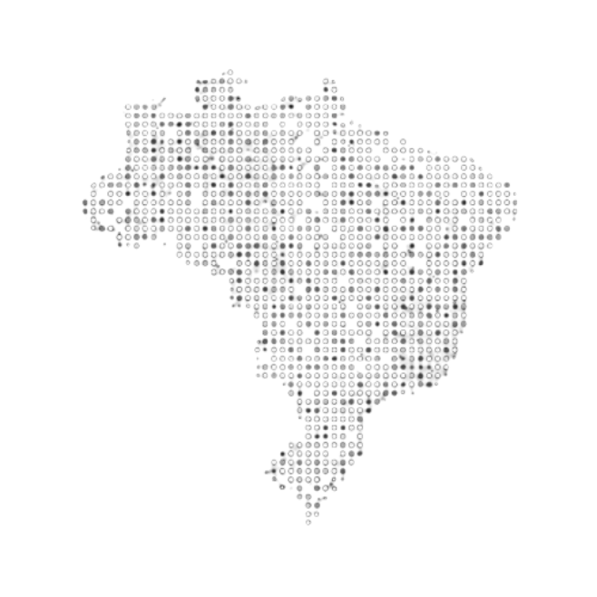

Todas as respostas vêm de fontes abertas: TSE, Câmara, Senado e Diário Oficial. Nada é inventado, nada é interpretado. A IA organiza a informação; quem forma opinião é você.
Desconfie de qualquer plataforma que não te mostre de onde vem a informação. Incluindo a nossa.
Ver nossa política de transparênciaPara quem vota pela primeira vez, para quem não tem tempo de pesquisar, para quem já desacreditou — e para quem precisa de fonte.
Não importa de onde você vem ou em quem você vota. Informação é de todo mundo.
Conhecer todos os perfisDemocracia não funciona sem cidadão informado.